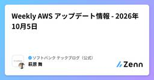

ソフトバンク テックブログ（公式）のフィード
https://zenn.dev/p/softbank
ソフトバンクのエンジニアが、ソフトバンクの業務・サービスを支える技術をテーマに、現場の知見や取り組みを発信する技術ブログです。 2026年３月以前のブログ https://www.softbank.jp/biz/blog/cloud-technology/
フィード

UIを作り込む前に動かす。AI駆動画面開発の試行錯誤
ソフトバンク テックブログ（公式）のフィード
はじめに私は入社 2 年目のエンジニアです。業務では約 3 カ月、複数の処理をノーコードで組み合わせてワークフローを作成できる Web アプリケーションの画面開発を担当してきました。このアプリケーションの中心機能は、GUI（Graphical User Interface）上でノードを配置してつなぐエディターです。あわせて、この機能を利用するための周辺画面も複数あります。私は、こうした画面群の設計から実装までを担当しました。そのため、画面をどう設計するかも自分で考える必要がありました。開発は 1 週間単位のスプリントで進めており、各スプリントで実際に動かせる画面を完成させる必要が...
1日前

AIに手元の資料を読ませたくて、ローカル知識ベースを作ってみた
ソフトバンク テックブログ（公式）のフィード
はじめにコーディングエージェントは、コードやドキュメントを grep などで探して読めます。設計書・仕様書・運用手順などのテキスト文書で、設定キーや関数名のように探す文字列が分かっているときには有効な方法です。一方、設計や運用について調べるときには、こんな場面もあります。知りたい内容は説明できるが、資料で使われている用語が分からない質問と資料とで表現が違い、文字列の一致だけでは見つけにくいリポジトリ外の設計 Wiki、PDF、Office 文書もまとめて調べたいそこで、用語による全文検索と意味検索を組み合わせ、文書形式をまたいで必要な箇所を探せるローカル知識ベースを作...
1日前

Langflow のフローを本体なしで動かす ― lfx で単体コンテナにするときにつまずいたポイント
ソフトバンク テックブログ（公式）のフィード
はじめに私は社内で、データ収集〜AIエージェント構築ができる仕組みを開発しており、その中でオープンソースのワークフロー構築ツール Langflow を利用しています。今回の開発では出来上がったワークフローをコンテナーイメージとして書き出し、任意の環境で起動できるようにする必要がありました。書き出すイメージは、Langflow 本体がなくても単体で起動でき、エディターでフローを直してもデプロイ済みの API の挙動が変わらないことが条件でした。ワークフローの数だけイメージを作るので、1 つあたりは小さく、すぐ起動することも求められました。Langflow を調べるうちに、フロー...
2日前

Weekly Azure アップデート情報 - 2026/09/29
ソフトバンク テックブログ（公式）のフィード
Weekly Azure アップデート情報 - 2026/09/29 ～[一般公開] 一般提供: Azure Copilot トラブルシューティングエージェント～皆さま、こんにちは。Weekly Azure では、今週もMicrosoft Azureのプロダクトアップデート情報をお届けします。直近2週間 (2026/08/28 - 2026/09/10) の主な Azure アップデート情報をお送りいたします。 今週の注目アップデート ・[一般公開] Azure Copilot トラブルシューティングエージェントAzure Copilot トラブルシューティングエ...
4日前
Weekly Google Cloud アップデート情報 - 2026年10月6日
ソフトバンク テックブログ（公式）のフィード
Weekly Google Cloud アップデート情報 - 2026年10月6日皆さま、こんにちは。先週 (2026/09/25 - 2026/10/01) の主な Google Cloud（旧GCP）のアップデート情報を紹介します。※本記事の引用元:Google Cloud リリースノート 注目のアップデートGemini Enterprise: アプリとデータストアのきめ細かなアクセス制御の構成管理者は、Google Cloud コンソール、Google Cloud CLI、または REST API を使用して、特定の Gemini Enterprise アプリや...
5日前

Weekly AWS アップデート情報 - 2026年10月5日
ソフトバンク テックブログ（公式）のフィード
皆さま、こんにちは。Weekly AWSでは、毎週 AWS プロダクトのアップデート情報をお届けしています。それでは、先週 (9月28日～10月4日) の主な AWS アップデート情報を紹介します。 今週の注目アップデート OpenAI 搭載の Amazon Bedrock Managed Agents (BMA) が利用可能に（プレビュー）AWS と OpenAI が共同開発した Amazon Bedrock Managed Agents (BMA)がプレビュー版として利用可能になりました。BMA は、AWS ネーティブに設計され、AWS リソースと統合された Open...
5日前

【業務革命】今、Google Workspace のGeminiサイドパネルが熱い！作業が激変する最新活用術
ソフトバンク テックブログ（公式）のフィード
Google WorkspaceのGeminiサイドパネル活用が今熱い理由本記事では、Google Workspaceの各アプリケーションで利用できる「Geminiサイドパネル」の最新機能を活用し、データ入力や資料作成といった日常業務を効率化する実践的な手法を解説します。 なぜ今、仕事の効率化にサイドパネルが欠かせないのか日常業務でAIを活用する際、別タブでチャット画面を開いてやり取りする方法が一般的かもしれません。しかし、作業スピードを一段引き上げるには、アプリ画面の横に常時表示できる Google Workspace with Gemini の「サイドパネル」の活用が有効...
10日前
BigQuery 会話分析 データエージェント超入門【連携編】-Gemini Enterprise を中心に
ソフトバンク テックブログ（公式）のフィード
BigQuery で作ったデータエージェントは、ご自身のアプリケーションはもちろんのこと、Gemini Enterprise からも使えます。データを分析するユーザーが BigQuery のコンソールを開かなくても、日本語で質問し、表やグラフで回答を受け取りインサイトを得られる様になります。この記事では、作成編のデータエージェントを Gemini Enterprise に登録する手順を紹介します。同じプロジェクトなら Agent Registry から選び、別のプロジェクトならエージェントカードの JSON を渡して登録します。後半では、利用者への共有、初回の認証、実際に表示されたグラ...
10日前
Sandbox設定から読み解く身近なISO/IEC 4200
ソフトバンク テックブログ（公式）のフィード
Sandbox設定から読み解く身近なISO/IEC 42001技術者が知っておきたいAIガバナンスの基本読了目安：約10分※Codexの設定仕様は、2026年9月16日時点の公式ドキュメントで確認しています。 要約Codexのサンドボックス設定には、AIにどこまで操作を許可するかというガバナンス上の判断が含まれます。本記事では、ファイルへの書き込み、承認、ネットワークアクセスといった身近な設定を例に、その考え方をISO/IEC 42001と対応付けて説明します。 AIガバナンスは技術者から遠いものなのか「AIガバナンス」と聞くと、どのようなものを想像するでし...
10日前
BigQuery 会話分析 データエージェント超入門【利用編】
ソフトバンク テックブログ（公式）のフィード
作成編では、公開データを使って「EC 売上分析」を作りました。この記事では、そのエージェントに質問し、検証済みクエリや指示が回答にどう現れるかを確認します。後半では、組織のメンバーにデータポータルから使ってもらう手順を紹介します。画面と回答は 2026 年 9 月に記録したものです。公開データの更新や生成結果の違いにより、手元の数値・文章とは一致しない場合があります。 検証済みクエリが使われたか確かめる公開したエージェントに「Complete 注文の売上相当はいくら？」と聞きます。注文ステータスが Complete（完了）のものを対象にした質問で、作成編で登録した検証済みクエリと...
10日前
自然言語だけで地物情報の取得・可視化を実現するAIエージェントの構成
ソフトバンク テックブログ（公式）のフィード
背景と課題国土交通省が公開している人流データや建物情報、自治体が提供する各種オープンデータなど、地物や人流に関するデータは年々整備が進んでいます。一方で、以下の理由から、分析して示唆を得るまでのコストが高いと感じていました。データ形式の分かりにくさ：GeoJSONやShapefileなど、地物情報特有の形式に慣れていないと扱いにくい。それに伴い、データを取得するAPIなどの仕様理解にも負荷を伴う。学習コストの高さ：可視化、分析に用いるQGISやArcGIS（いずれも地理情報の分析、可視化に用いるツール）は高機能だが、学習コストが高いこれらの課題を解決するため、エージ...
10日前
OpenAI Agents API を試す：GitHub の OSS を一言で使わせてみた
ソフトバンク テックブログ（公式）のフィード
ソフトバンクのCHENです。普段は、データ構造化ツール「TASUKI Annotation」の技術研究＆全社RAG基盤に携わっています。あわせて生成AI・エージェント技術の探索にも取り組み、実務投入を見据えた技術検証を行っています。本記事では、2026年9月にパブリックベータになった OpenAI の Agents API を、GitHub の OSS を一言で使わせる題材で試しました。 TL;DRAgents API は、Codex のように自律的に作業するエージェントを、実行環境ごと1つの API として使える仕組みです。Chat Completions API や Resp...
10日前
GPT Image 2.5 と GPT Image 2 の日本語スライド生成を比較検証
ソフトバンク テックブログ（公式）のフィード
ソフトバンクのCHENです。普段は、データ構造化ツール「TASUKI Annotation」の技術研究＆全社RAG基盤に携わっています。あわせて生成AI・エージェント技術の探索にも取り組み、実務投入を見据えた技術検証を行っています。2026年9月8日に OpenAI から GPT Image 2.5 がリリースされたので、前回の記事と同じ日本語スライド生成の題材で、GPT Image 2 との差を検証しました。 TL;DRGPT Image 2.5 は API 上で flare（速度重視）と sunburst（精細さ重視）の2モデルです。コスト: 同じ quality=hig...
10日前
BigQuery 会話分析 データエージェント超入門【作成編】
ソフトバンク テックブログ（公式）のフィード
「売上を商品別に見たい」と思ったとき、SQL を書ける人に集計を頼んでいませんか。BigQuery の会話分析（Conversational Analytics）では、日本語の質問から SQL を作り、実行結果を表やグラフ、文章で確認できます。このブログ連載は、BigQuery のデータエージェントを作り、実際に使い、Gemini Enterprise へ連携するまでを扱う 3 部作です。第 1 回の作成編ではエージェントの設定と公開、第 2 回の利用編では回答の確かめ方と組織内のユーザーへの共有、第 3 回の連携編では Gemini Enterprise への登録と利用を紹介します。...
10日前
【AIを時短で終わらせない】GoogleのGemini Notebookで実践する、自分の言葉で語るためのインプットDX
ソフトバンク テックブログ（公式）のフィード
1. はじめに：AIが作った「完成度の高いスライド」と、私の「小さな焦り」こんにちは！ソフトバンクの川口です。2026年新卒として入社しました。最近は生成AIのおかげで、ビジネスの資料作成や情報整理が本当に効率化されましたよね。スライドの構成案をAIに考えてもらい、手元のデータを渡せば、新卒の私でも一見すると非常にレベルの高いスライドが、短い時間で仕上がります。最初にAIが生成した資料を見たときは、「資料作成は、まずはAIに任せるのが一番いいな。大幅な時短になる！」と、その便利さを本当に心強く感じたのを覚えています。しかし、実際に発表の準備を進める中で、ある「ギャップ」に気...
10日前
【特許出願中】生成AIを活用した脆弱性対応の判断支援 ―攻撃シナリオ推定と仮想ログ生成による調査効率化―
ソフトバンク テックブログ（公式）のフィード
はじめにインフラ運用において、ネットワーク機器（ルーターやファイアウォールなど）の新たなCVE（Common Vulnerabilities and Exposures）情報が公開された際には、対象機器や設定への該当有無を確認し、対応の優先度を速やかに判断する必要があります。一方で、脆弱性情報だけから実環境における対応優先度を判断することは容易ではありません。機器の設定、ネットワーク上の到達性、認証・権限の条件など、実際の利用環境を踏まえて確認する必要があるためです。本記事では、担当者による脆弱性の判断やログ調査を生成AIで支援するシステムを紹介します。具体的には、メーカーが...
11日前
AI 駆動開発で「設計」はどこに書くのか ― 振る舞いをテストで検証できる「仕様」にしてみる
ソフトバンク テックブログ（公式）のフィード
はじめに日々の開発において、AI にコードを書いてもらうことは日常になってきました。要件を伝えれば既存のコードベースを調査し、その作法に合わせて機能を足してくれます。生成されたコードがいつも正しいわけではありませんが、それでも「コードを書く」という作業そのものは、以前ほど開発のボトルネックではなくなりつつあると感じています。その一方で、AI と一緒に開発していると、「何を実装してもらうか」を決める時間の比重が増えてきました。この記事では、その実感を出発点に、次の 3 つを順に考えてみました。AI 駆動開発で、設計はどこに書いておくとよいのか既存の設計成果物で、実装されたコ...
11日前
【Microsoft 365 Copilot】気づいたら AI を入り口に業務が回っていた
ソフトバンク テックブログ（公式）のフィード
こんにちは、クラウドエンジニアの須藤です。この記事では「私が Microsoft 365 Copilot を利用し始めてから 3年ほど経過して仕事がどのように変化したのか」について紹介していきたいと思います。Microsoft 365 Copilot が一般提供を開始されてからもうすぐ 3年が経とうとしています。この 3年で大きく変わったのは、Microsoft 365 Copilot だけではありません。ChatGPT や Claude、Gemini をはじめ、気づけば実にさまざまな AI が世の中に広がり、資料作成・メール・検索・要約と、あらゆる場面で AI が当たり前に使われ...
11日前
Weekly AWS アップデート情報 - 2026年9月28日
ソフトバンク テックブログ（公式）のフィード
皆さま、こんにちは。Weekly AWSでは、毎週 AWS プロダクトのアップデート情報をお届けしています。それでは、先週まで (9月14日～27日) の主な AWS アップデート情報を紹介します。 今週の注目アップデート Amazon CloudWatch Omni が一般提供を開始Amazon CloudWatch の進化版である Amazon CloudWatch Omni の一般提供が開始されました。CloudWatch Omni は、AI を活用した可観測性エクスペリエンスであり、チームやアプリケーションを中心に構成されているため、アプリケーションとエージェント...
11日前
Weekly Google Cloud アップデート情報 - 2026年9月29日
ソフトバンク テックブログ（公式）のフィード
Weekly Google Cloud アップデート情報 - 2026年9月29日 ～ Gemini Enterprise: 共有エージェントの所有権の移管 ～皆さま、こんにちは。直近2週間 (2026/09/11 - 2026/09/24) の主な Google Cloud（旧GCP）のアップデート情報を紹介します。※本記事の引用元:Google Cloud リリースノート 注目のアップデートGemini Enterprise: 共有エージェントの所有権の移管管理者は、従業員が作成した共有エージェントの所有権を、別のユーザーまたは自分自身に Google Cloud...
12日前